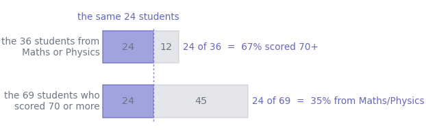
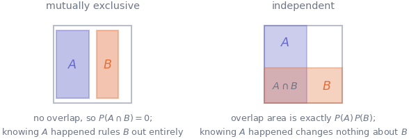
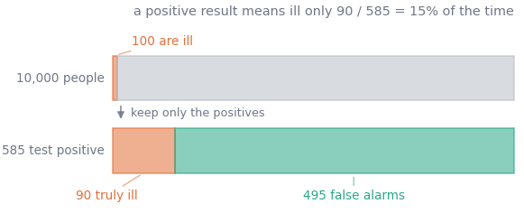

4. Probability, conditioning and Bayes
Statistics · Unit 4
Why this unit is here
From here on, every claim these notes make is a probability statement. A confidence level, a \(p\)-value, “the procedure captures the truth 95% of the time” — all of them are probabilities, and none of them mean what they appear to mean until you can handle conditioning.
There is one error in particular that this unit exists to prevent. It is swapping a conditional probability for its reverse: reading the chance of a positive test given the disease as the chance of the disease given a positive test, or the chance of this data if the hypothesis were false as the chance the hypothesis is false. It has sent people to prison. It is the same mistake every time, and once you can see it you cannot unsee it.
4.1 Before you start
You should be able to:
- turn a count into a proportion and back — S1;
- read a two-way table of counts — S1;
- work with fractions and percentages.
Quick check. Of the 237 students in the cohort, 69 scored 70 or more. What proportion is that, as a decimal and as a percentage?
TipShow the answer
\(69/237 = 0.291\), or \(29.1\%\).
Keep hold of both the count and the total. Almost every confusion in this unit comes from losing track of what the denominator was.
4.2 The idea
A probability is a number between 0 and 1 attached to an event, measuring how often it happens. Take it, for now, as a long-run frequency: if you could repeat the situation many times, the probability is the fraction of times you would see the event. That is the reading frequentist statistics is built on, and it is why S8 can say things about procedures but not about individual results.
The whole subject then rests on one move: conditioning. Conditioning means restricting attention to a subset of the possibilities and asking the question again inside it. It changes the denominator, and changing the denominator changes the answer — often dramatically, and in a way people consistently fail to expect.
Here it is on the cohort. Take two facts about a student: they came from a Mathematics or Physics background, and they scored 70 or more. Twenty-four students have both.
Two thirds and one third, from the same twenty-four people. The only thing that changed was which group we agreed to look at.
Write them properly and the difference is visible in the notation:
\[ P(\text{scored } 70{+} \mid \text{Maths/Physics}) = \frac{24}{36} = 0.67, \qquad P(\text{Maths/Physics} \mid \text{scored } 70{+}) = \frac{24}{69} = 0.35 . \]
The vertical bar is read “given”. The thing after the bar is the denominator. Swap the two sides and you have changed the question, not merely the phrasing.
4.3 The mechanics
The rules, all of them
An event is a set of outcomes; \(P(A)\) is its probability. Everything follows from three facts: \(0 \le P(A) \le 1\), the probability of “something happens” is 1, and the probabilities of outcomes that cannot both occur add up.
From those:
\[ P(\text{not } A) = 1 - P(A) \]
\[ P(A \cup B) = P(A) + P(B) - P(A \cap B) \]
\[ P(A \cap B) = P(A \mid B)\, P(B) \]
The subtraction in the second is the whole content of it: add two events and you have counted their overlap twice, so take it off once. Read \(\cup\) as “or” (inclusive) and \(\cap\) as “and”.
Conditional probability
\[ P(A \mid B) = \frac{P(A \cap B)}{P(B)}, \qquad \text{defined when } P(B) > 0 . \]
In counts, this is exactly what the figure did: of the things in \(B\), what fraction are also in \(A\). To condition is to change the denominator.
Independent is not the same as mutually exclusive
\(A\) and \(B\) are independent when
\[ P(A \cap B) = P(A)\,P(B), \]
equivalently (when \(P(B) > 0\)) when \(P(A \mid B) = P(A)\): learning that \(B\) happened tells you nothing new about \(A\).
They are mutually exclusive when they cannot both happen, \(P(A \cap B) = 0\).
These are close to opposites, and confusing them is one of the two commonest errors in the whole unit.

If \(A\) and \(B\) are mutually exclusive and both have positive probability, they are as far from independent as two events can be: \(P(A \mid B) = 0\), while \(P(A) > 0\). Learning \(B\) has told you everything about \(A\).
Splitting a probability up
If \(B_1, \dots, B_k\) cover every possibility without overlapping — a partition — then
\[ P(A) = \sum_{i=1}^{k} P(A \mid B_i)\, P(B_i) . \]
This is the law of total probability, and in words it is unremarkable: an overall rate is the weighted average of the group rates, weighted by group size. It is the machinery behind S1’s worked example, where a pooled answer disagreed with every group.
Bayes’ theorem
Put the multiplication rule together both ways round — \(P(A \cap B)\) equals both \(P(A \mid B)P(B)\) and \(P(B \mid A)P(A)\) — and rearrange:
\[ P(B \mid A) = \frac{P(A \mid B)\, P(B)}{P(A)} . \]
That is Bayes’ theorem. It is the machine for reversing a conditional, and the thing to notice is that you cannot reverse one without knowing \(P(B)\) — the base rate. A conditional probability on its own does not determine its reverse.
That is not an abstraction, and the standard illustration is worth doing in counts rather than fractions, because in counts nobody gets it wrong. Take a disease that 1% of people have, and a test that is positive for 90% of people who have it and for 5% of people who do not. You test positive. What is the chance you have it?
Imagine 10,000 people.

One hundred are ill and 90 of them test positive. Nine thousand nine hundred are well and 5% of them — 495 people — test positive anyway. So 585 people test positive and 90 of them are ill: \(90/585 = 15\%\).
The test is good. The answer is 15% because the healthy group is a hundred times larger, so its small error rate still produces more positives than the ill group does in total.
Notice which dial matters. Push the sensitivity from 90% all the way to a perfect 100% and you gain ten true positives: \(100/595 = 17\%\), barely a change. Cut the false-positive rate from 5% to 0.5% instead and the false alarms fall from 495 to 50, giving \(90/140 = 64\%\). When a condition is rare, the positive predictive value is governed by the false-positive rate and the base rate, and hardly at all by how well the test detects true cases.
4.4 Worked example
The cohort’s own screening test.
Every student sat a diagnostic on arrival. Treat “scored 70 or more on the diagnostic” as a test for “scored 70 or more at the end”, and ask how good a test it is.
cohort = pd.read_csv("../data/cohort.csv")
usable = cohort.dropna(subset=["background", "final_score"])
usable = usable[usable["final_score"].between(0, 100)]
usable = usable.assign(strong_start=usable["diagnostic_score"] >= 70,
strong_finish=usable["final_score"] >= 70)
print(pd.crosstab(usable["strong_start"], usable["strong_finish"], margins=True))strong_finish False True All
strong_start
False 121 22 143
True 47 47 94
All 168 69 237Four counts and two margins, and every probability in this unit is a ratio of two of them.
n = len(usable)
both = ((usable["strong_start"]) & (usable["strong_finish"])).sum()
start = usable["strong_start"].sum()
finish = usable["strong_finish"].sum()
print(f"P(strong finish) {finish / n:.4f}")
print(f"P(strong start) {start / n:.4f}")
print(f"P(strong start AND strong finish) {both / n:.4f}")
print(f"P(strong finish | strong start) {both / start:.4f} <- {both}/{start}")
print(f"P(strong start | strong finish) {both / finish:.4f} <- {both}/{finish}")P(strong finish) 0.2911
P(strong start) 0.3966
P(strong start AND strong finish) 0.1983
P(strong finish | strong start) 0.5000 <- 47/94
P(strong start | strong finish) 0.6812 <- 47/69Read those last two lines slowly. The diagnostic flags 94 students, and exactly 47 of them go on to score 70 or more: a positive flag is right half the time. Yet the test is not useless, because 29% of students score 70+ overall, and among the flagged ones it is 50% — the flag has raised the odds considerably. It has simply not raised them to anything like certainty.
Now the same numbers as Bayes’ theorem, to see the machine work:
\[ P(\text{finish} \mid \text{start}) = \frac{P(\text{start} \mid \text{finish}) \; P(\text{finish})}{P(\text{start})} = \frac{0.6812 \times 0.2911}{0.3966} = 0.5000 . \]
sensitivity = both / finish # P(start | finish)
prior = finish / n # P(finish)
evidence = start / n # P(start)
print(f"Bayes gives {sensitivity * prior / evidence:.4f}")
print(f"direct ratio {both / start:.4f}")Bayes gives 0.5000
direct ratio 0.5000Finally, are the two events independent? If they were, the probability of both would be the product of the two separate probabilities:
p_both = both / n
p_product = (start / n) * (finish / n)
print(f"P(start AND finish) {p_both:.4f}")
print(f"P(start) x P(finish) {p_product:.4f}")
print(f"ratio {p_both / p_product:.2f} — a strong start makes a strong finish "
f"{p_both / p_product:.2f} times likelier than chance alone")P(start AND finish) 0.1983
P(start) x P(finish) 0.1155
ratio 1.72 — a strong start makes a strong finish 1.72 times likelier than chance aloneNot independent, and nobody expected them to be. What the numbers add is a size: students who start strong finish strong 1.7 times as often as independence would predict, and still only half the time.
4.5 Try it yourself
Exercise 1 \(P(A) = 0.5\), \(P(B) = 0.4\), and \(P(A \cap B) = 0.2\).
- Are \(A\) and \(B\) independent?
- What is \(P(A \cup B)\)?
- What is \(P(A \mid B)\), and what is \(P(B \mid A)\)?
TipShow the solution
Yes. \(P(A)P(B) = 0.5 \times 0.4 = 0.2\), which is exactly \(P(A \cap B)\).
\(P(A \cup B) = 0.5 + 0.4 - 0.2 = 0.7\). Forgetting to subtract the overlap gives 0.9, which is the commonest slip here.
\(P(A \mid B) = 0.2/0.4 = 0.5\), and \(P(B \mid A) = 0.2/0.5 = 0.4\). Both equal the unconditional probabilities, which is another way of saying the events are independent — and note that the two conditionals are different numbers even so. Independence does not make \(P(A\mid B)\) and \(P(B \mid A)\) equal; it makes each equal to its own unconditional probability.
Exercise 2 One in 200 people in a population has a certain condition. A screening test is positive for 99% of people who have it and for 2% of people who do not.
Work out, in counts, the probability that someone who tests positive has the condition. Then say what would have to change to push that probability above 50%.
TipShow the solution
Take 20,000 people. 100 have the condition and 99 of them test positive. 19,900 do not, and 2% of them — 398 people — test positive anyway. So 497 test positive and 99 have the condition:
\[P(\text{condition} \mid \text{positive}) = \frac{99}{497} = 0.199 .\]
About one in five, from a test that is right 99% of the time on people who have the condition.
To push it past 50% you need the false positives to fall below 99. The sensitivity cannot help — it is already at 99% and even perfection would only add one true positive. What matters is the false-positive rate: dropping it from 2% to 0.4% leaves about 80 false positives and a probability of \(99/179 = 0.55\). The other route is a higher base rate: screening a group already known to be at risk, rather than everyone. This is precisely why population-wide screening for rare conditions is a harder problem than it sounds.
Exercise 3 A barrister tells a jury: “The chance of this DNA match occurring if the defendant were innocent is one in a million. So there is only a one in a million chance that the defendant is innocent.”
Name the error, write both probabilities in symbols, and explain what else the jury would need to know.
TipShow the solution
The error is swapping a conditional for its reverse — often called the prosecutor’s fallacy. The barrister has been given
\[P(\text{match} \mid \text{innocent}) = 10^{-6}\]
and has reported it as
\[P(\text{innocent} \mid \text{match}) = 10^{-6} .\]
Bayes’ theorem says those are equal only by coincidence, and to get from one to the other you need the base rate: how many people could plausibly have left that sample.
Suppose the pool of possible sources is 10 million people, one of whom is guilty. Among the 10 million innocent people, about 10 would match by chance. So there are roughly 11 matching people, one guilty and ten not, and the probability of innocence given a match is around \(10/11\) — not one in a million. The number the jury was given is real; the conclusion drawn from it is off by a factor of about nine hundred thousand.
This is not a hypothetical error. It has produced wrongful convictions.
4.6 Check it in Python
Every probability in this unit is a ratio of counts, so all of it is checkable directly. First, that conditioning really is division by the new denominator:
flagged = usable[usable["strong_start"]]
print(f"P(finish | start) by filtering {flagged['strong_finish'].mean():.4f}")
print(f"P(finish | start) by division {both / start:.4f}")P(finish | start) by filtering 0.5000
P(finish | start) by division 0.5000Second — the mistake this unit exists to prevent. It is tempting to think that if a flag predicts an outcome well, the outcome predicts the flag equally well. Assert it and watch it fail:
p_finish_given_start = both / start
p_start_given_finish = both / finish
assert np.isclose(p_finish_given_start, p_start_given_finish), (
f"P(finish|start) = {p_finish_given_start:.4f} but "
f"P(start|finish) = {p_start_given_finish:.4f}"
)--------------------------------------------------------------------------- AssertionError Traceback (most recent call last) Cell In[9], line 3 1 p_finish_given_start = both / start 2 p_start_given_finish = both / finish ----> 3 assert np.isclose(p_finish_given_start, p_start_given_finish), ( 4 f"P(finish|start) = {p_finish_given_start:.4f} but " 5 f"P(start|finish) = {p_start_given_finish:.4f}" 6 ) AssertionError: P(finish|start) = 0.5000 but P(start|finish) = 0.6812
Both fractions have 47 on top. They differ because the denominators differ — 94 flagged students against 69 strong finishers. The two are equal only when the two events happen to be equally common, which is a coincidence rather than a rule:
print(f"P(start) {start / n:.4f} P(finish) {finish / n:.4f}")
print(f"ratio of the two conditionals {(both / start) / (both / finish):.4f}")
print(f"ratio of the two base rates {(finish / n) / (start / n):.4f}")P(start) 0.3966 P(finish) 0.2911
ratio of the two conditionals 0.7340
ratio of the two base rates 0.7340The two ratios agree, which is Bayes’ theorem in one line: reversing a conditional multiplies it by the ratio of the base rates, and by nothing else.
Third, the addition rule, including the part everyone forgets:
either = ((usable["strong_start"]) | (usable["strong_finish"])).mean()
naive = start / n + finish / n
print(f"P(start OR finish) counted directly {either:.4f}")
print(f"P(start) + P(finish) {naive:.4f} too big by {naive - either:.4f}")
print(f"P(start AND finish) {both / n:.4f}")P(start OR finish) counted directly 0.4895
P(start) + P(finish) 0.6878 too big by 0.1983
P(start AND finish) 0.1983The amount by which the naive sum overshoots is exactly the overlap, which is what the \(-P(A \cap B)\) in the addition rule is there to remove.
4.7 Common wrong turns
Where this usually goes wrong
- Reading \(P(A \mid B)\) as \(P(B \mid A)\)
- The single most expensive error in applied statistics. Two thirds of the Maths/Physics students scored 70+, but only a third of the students who scored 70+ were from Maths/Physics. Say the denominator out loud every time: “of the 36, how many…”.
- Ignoring the base rate
- A test that is right 90% of the time on people with a rare disease still produces mostly false alarms, because the healthy group is so much bigger. Before believing a positive result, ask how many of the thing there were to begin with.
- Treating mutually exclusive as independent
- They are nearly opposite. Two events that cannot both happen are maximally informative about each other: if one occurred, the other definitely did not. Independence means the overlap is exactly \(P(A)P(B)\), not zero.
- Multiplying probabilities that are not independent
- \(P(A \cap B) = P(A)P(B)\) only under independence. In general it is \(P(A \mid B)P(B)\). Multiplying dependent probabilities — several test results from the same faulty instrument, several children in the same family — has produced some of the most notorious statistical miscarriages of justice on record.
- Expecting independent trials to even out
- A fair coin that has come up heads six times has probability exactly \(1/2\) of heads next. The coin has no memory, and “it is due a tail” is a statement about the gambler, not the coin.
- Forgetting that \(P(A \cup B)\) double-counts
- Adding two probabilities counts the overlap twice. Subtract it once. If the events are mutually exclusive there is no overlap and the addition is safe, which is why the shortcut works often enough to be dangerous.
4.8 Check yourself
Answers are at the foot of the page. Give a reason as well as an answer.
\(P(A) = 0.3\) and \(P(B) = 0.6\). Which is impossible?
- \(P(A \cap B) = 0\)
- \(P(A \cap B) = 0.18\)
- \(P(A \cap B) = 0.3\)
- \(P(A \cap B) = 0.4\)
- In the worked example, \(P(\text{strong finish} \mid \text{strong start}) = 0.50\) while \(P(\text{strong finish}) = 0.29\). Does the diagnostic score predict the final score?
- A test for a condition affecting 1 in 10,000 people is positive for 99% of those who have it and 1% of those who do not. Roughly what fraction of positive results are correct?
- Two events are mutually exclusive and both have probability 0.3. Are they independent?
- A colleague says: “There is a 5% chance of getting a result this extreme if the drug does nothing, so there is a 95% chance the drug works.” What has gone wrong?
TipShow the answers
(d). An intersection cannot be larger than either event on its own, and \(0.4 > 0.3 = P(A)\). Note that (a), (b) and (c) are all possible: 0 makes them mutually exclusive, 0.18 makes them independent, and 0.3 means \(A\) is entirely contained in \(B\).
Yes, usefully, and not decisively. It nearly doubles the probability — from 29% to 50% — which is a real gain. But half of the flagged students do not go on to score 70+, so treating the flag as a verdict about an individual would be wrong half the time. Both statements have to be made together.
About 1%. In a million people, 100 have the condition and 99 test positive; 999,900 do not and about 9,999 test positive anyway. That is roughly 10,098 positives of which 99 are correct — just under 1 in 100. If your first instinct was 99%, that is the base-rate error, and it is the normal instinct.
No, and this is the trap. \(P(A \cap B) = 0\), while \(P(A)P(B) = 0.09\). They are strongly dependent: knowing \(B\) happened tells you \(A\) certainly did not. Mutual exclusivity and independence can hold at once only if one of the events has probability zero.
The conditional has been reversed. The 5% is \(P(\text{result this extreme} \mid \text{drug does nothing})\), and the colleague has reported it as \(1 - P(\text{drug works} \mid \text{result})\). Getting from the first to the second needs a base rate — how plausible the drug was before the study — which the \(p\)-value does not contain. S9 is entirely about this distinction.